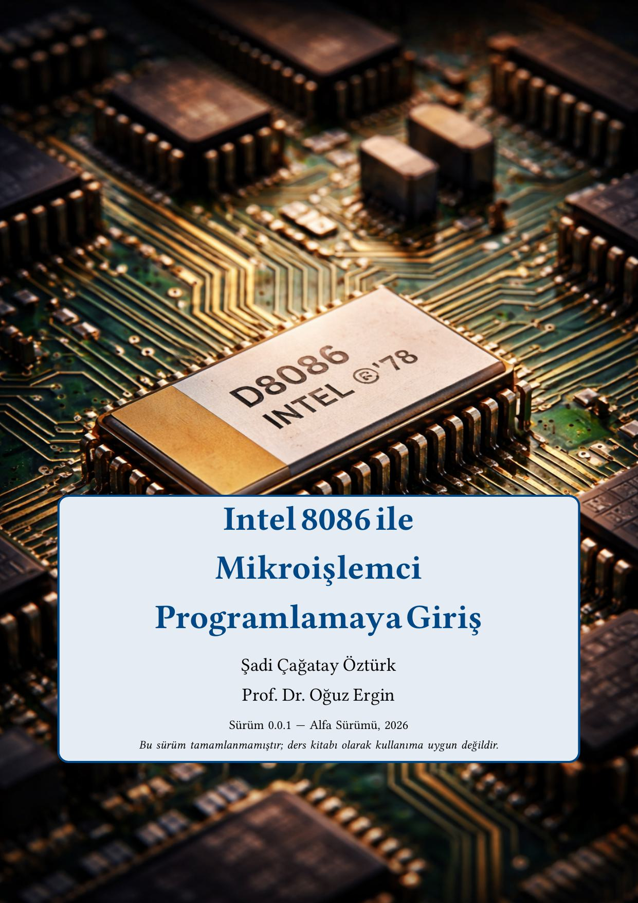
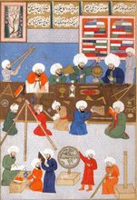
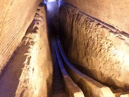
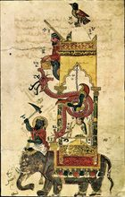
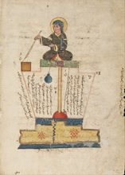
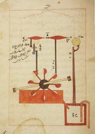
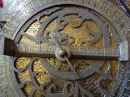
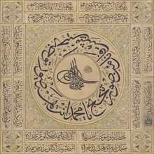

Bu kitap yeni hazırlanmış olup içerik düzenli olarak güncellenmektedir. Yeni bölümler, örnekler ve düzeltmeler her sürümde eklenmektedir. Yorum, öneri ve hata bildirimleriniz için: oergin@sharjah.ac.ae
Bu kitap, Intel 8086 mikroişlemcisi üzerinden çevirici dili (assembly language) programlamayı öğretmek amacıyla hazırlanmıştır. Bilgisayar mühendisliği ve elektrik-elektronik mühendisliği lisans öğrencilerine yöneliktir.
Mikroişlemci mimarisi, sayı sistemleri, buyruk kümesi ve sistem programlama konularını kapsamaktadır. Kitap sürekli güncellenmekte olup hata bildirimleri memnuniyetle karşılanır.

Bölüm 1 Bilgisayar Sistemlerine GirişTemel bilgisayar mimarisi, von Neumann modeli, işlemci ve bellek yapısı, yazılım katmanları.

Bölüm 2 Sayı Sistemleriİkilik, sekizlik, onaltılık taban; işaretli sayılar; BCD; ASCII; IEEE 754 kayan nokta.

Bölüm 3 8086 Mimarisi8086 iç yapısı, yazmaçlar, bölütlü bellek modeli, adres uzayı, BIU ve EU.

Bölüm 4 Çevirici Diline GirişÇevirici dili söz dizimi, program yapısı, FASM/NASM kullanımı, ilk program, derleme ve çalıştırma.
MOV, PUSH, POP, XCHG, LEA, XLAT buyrukları; adresleme kipleri.
ADD, SUB, MUL, DIV, AND, OR, XOR, NOT buyrukları ve işaret bayrakları.
JMP, CALL, RET, koşullu atlamalar, döngü buyrukları (LOOP), alt programlar.
MOVS, CMPS, SCAS, LODS, STOS buyrukları; REP öneki; blok işlemleri.
Donanım ve yazılım kesmeleri, INT buyruğu, kesme vektörü tablosu, çevre birimi sürücüleri.
IN/OUT buyrukları, port adresleme, klavye ve ekran G/Ç, DOS sistem çağrıları.
Başlangıç kodu, bellek yönetimi, görev anahtarlama, basit işletim sistemi tasarımı.

Ek A x86 Buyruklarının ListesiTam 8086/8088 buyruk kümesi referans tablosu, işlem kodları, bayrak etkileri.

Ek B Derleme Araçları (FASM/NASM)FASM ve NASM kurulumu, temel kullanım, söz dizimi farklılıkları, hata ayıklama ipuçları.
INT 21h DOS servisleri, Linux sistem çağrısı tablosu, yaygın kullanım örnekleri.
BIOS kesme vektörü tablosu; video (INT 10h), klavye (INT 16h), disk (INT 13h) servisleri.

Ek E ASCII Kodları ve Klavye Tarama KodlarıTam ASCII karakter tablosu, klavye tarama (scan) kodları, genişletilmiş karakter seti.
Bu eser Creative Commons Atıf-GayriTicari-Türetilemez 4.0 Uluslararası lisansı ile lisanslanmıştır. Özgürce paylaşılabilir ve dağıtılabilir — uygun atıf yapılması, ticari amaçla kullanılmaması ve değişiklik yapılmaması koşuluyla.